Poema del triángulo
Dwight Paine
Messiah College (Grantham, P.A.)
Mathematics MagazineVol 56, n 4 September (1983), (p. 235-238)
(Quiero agradecer a Mustapha Moubarik, del Departamento DIDÁCTICA DE LA LENGUA Y LA LITERATURA Y FILOLOGÍAS INTEGRADAS de la Universidad de Sevilla, y a mi hija, María Barroso Tristán, Filologa Inglesa, la corrección de la traducción)
Hablemos sobre un triángulo Lo llamaremos ABC. 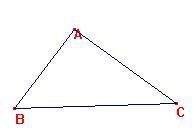 |
Las medianas convergen en un punto, llamado baricentro, G 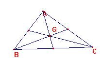 |
Para bisecar los ángulos toma un ojo terrible. 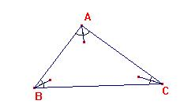 |
Pero tales bisectrices se reunen en el incentro I 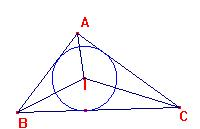 |
Hay tres bisectrices exteriores, además de las otras 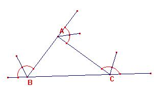 |
Se reunen en los excentros, Ia Ib Ic 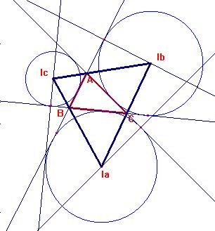 |
Las mediatrices deben ir a través de los lados. 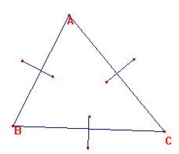 |
Todas radiando hacia fuera, desde el circuncentro O 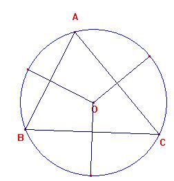 |
Aunque las alturas son tres, señala mi hija Raquel, 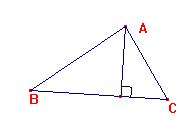 |
Hay un punto en todas ellas, el ortocentro, H 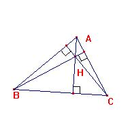 |
Sus pies son a menudo llamados D, E y F como en mi poesía 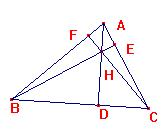 |
Y las medianas también tienen pies que se les puede llamar A, B , C prima. 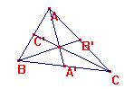 |
Estos pies (hay seis de ellos) Pueden encontrarse también 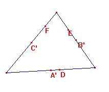 |
Alrededor de una circunferencia de nueve puntos con centro N 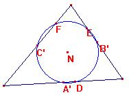 |
La circunferencia de los nueve puntos Hace algo difícil 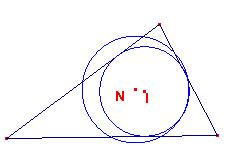 |
Toca la circunferencia inscrita Y las tres exinscritas ¡También! 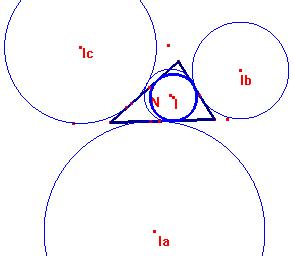 |
Los medial y órtico Son triángulos inscritos 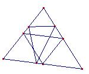 |
ABC-prima y DEF Es como se describen 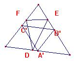 |
El medial tiene una figura semejante a ABC 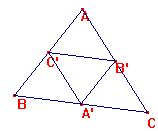 |
El órtico hace el menor camino que toca los lados (todos) 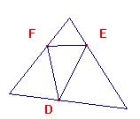 |
El medial tiene sus alturas que se reunen en O 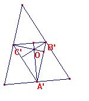 |
Las bisectrices del órtico Pasan seguro por H 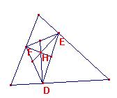 |
También los vértices de ambos están en la circunferencia de los nueve puntos 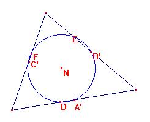 |
Sus mediatrices se reunen en N seguro. 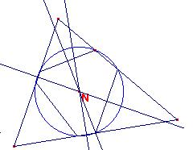 |
Tales triángulos tienen centros la mayoría están alineados Pero no de cualquier manera Hay un orden asombroso
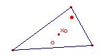 |
Cuatro centros están en la línea de Euler Están relacionados en un orden estricto Con N a medio camino entre O y H Y G en la tercera parte. 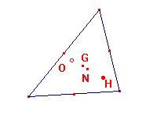 |
Otros cuatro se establecen sobre un cuadrángulo ortocéntrico El Incentro en el medio, con los excentros alrededor 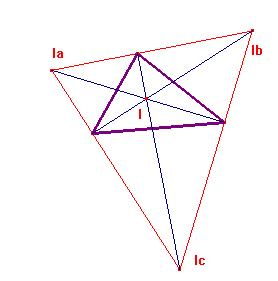 |
¿Quín pudiera pensar en un triángulo Exactamente ABC Que tuviera toda esa belleza escondida, Para que pudiéramos encontrala y verla? 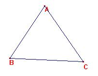
|